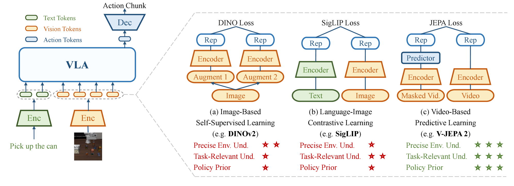
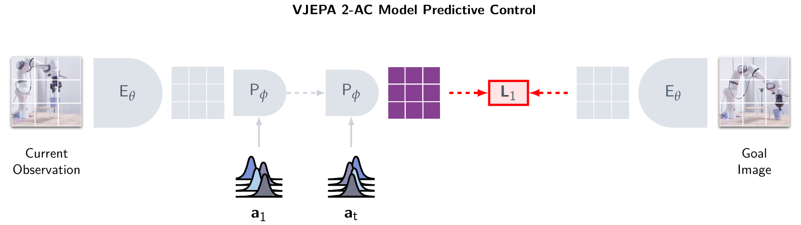

VLM·VLA — What They Do Well
Two paradigms have rapidly shifted the center of AI research in recent years: VLMs (Vision-Language Models) and VLAs (Vision-Language-Action Models).
VLMs excel at integrating images and text to describe "what is happening in this photo" in language. GPT-4V, Gemini, and LLaVA are leading examples — they have reached near-human performance in image classification, captioning, and VQA (Visual Question Answering). VLAs go one step further, predicting actions: "how should a robot move in this situation?" RT-2, π₀ (Pi0), NVIDIA GR00T, and OpenVLA fall into this category.
What VLMs Do Well
- · Object recognition and description in images/video
- · Visual Question Answering (VQA)
- · Image-based instruction understanding
- · Multilingual multimodal reasoning
- · Document and chart comprehension
What VLAs Do Well
- · Language instructions → robot actions
- · Manipulation tasks in constrained environments
- · Cross-embodiment generalization
- · Imitation learning from demonstration data
- · Sequential execution of structured tasks
Yet both share a fundamental gap: neither has an internal model of how the world works. They can see and understand, receive instructions and act — but they don't know how their current action will change the world 5 seconds from now.
Limits of VLMs — Perception Is Not Enough
VLMs are powerful, but they run into three fundamental walls.
① The Symbol Grounding Problem
VLMs are statistical distribution models. They appear to "understand" that "an apple falls," but in reality this is just a probabilistic connection between language patterns — not an internalized understanding of gravity. The symbol grounding that cognitive science refers to is absent. Even connecting images through multimodality doesn't fully solve this.
② Reasoning Requires Language
VLM reasoning is tightly coupled to textual representation. Humans can reason through spatial and sensorimotor imagination without language, but VLMs process even non-linguistic tasks through language structure. This creates structural weaknesses in spatiotemporal reasoning and intuitive physics understanding. Ask GPT-4V "if this ball rolls down this ramp, where does it stop?" with an image — it can describe verbally, but accurately predicting the physical trajectory is hard, because the physics are approximated through language patterns, not internalized.
③ Temporal Disconnection — Frame-Independent Processing
Most VLMs process images or video frames independently. With multi-camera input, token counts explode making real-time inference difficult, and the basic architecture makes temporal causal reasoning — "where was this object 5 seconds ago, and where will it be in 5 seconds?" — structurally hard to perform.

"MLLMs cannot truly reason without language. Their reasoning, perception, and decision-making processes are tightly coupled to textual representations. Unlike humans, who can form visual or sensorimotor imaginations..."
Limits of VLAs — Action Is Not Enough
VLAs added an action prediction layer to VLMs. But three core weaknesses remain.
Why Causality Is Decisive
A self-driving vehicle recognizing "there is a person ahead" and taking the action "stop" is achievable with VLA. But predicting "will this person walk right in 3 seconds, or suddenly step into the road?" based on physics and behavioral laws is a different kind of capability. This is causal reasoning and future state prediction — precisely the structural gap of VLAs.
Long-horizon tasks requiring thousands of sequential actions — like mining a diamond in Minecraft or complex robotic assembly — are hard to solve with VLAs alone. The ability to imagine the future, evaluate action consequences inside that imagination, and select an optimal path — this is what world models provide.
What Is a World Model?
A world model is an AI's predictive representation that can internally simulate how the environment changes and what consequences follow. Rather than simply perceiving the current state, it can imagine and evaluate in its mind: "If I take this action, how will the world change?"
"A world model is an internal predictive simulation of the environment that enables an agent to reason about causality and make plans by imagining the consequences of possible actions."
Yann LeCun has consistently argued this direction for years. In late 2025, he reiterated: "In 3–5 years, nobody will be using LLMs the way we use them today — world models will be the mainstream AI architecture." He then founded AMI Labs, raising €500M at a €3B valuation, betting directly on this direction.

Two Core Functions
1. World Understanding
Internally representing the environment's mechanisms. Implicitly learning physical laws — gravity, friction, object permanence, causal structure. Can explain "why did this happen?"
2. Future Prediction
Simulating the consequences of possible actions. Evaluating "what happens if I do A?" in imagination without taking the actual action, then selecting the optimal action.
Major World Model Architectures Compared
2025 was an inflection point for world models. Four large systems competed with different approaches and demonstrated real capability.
1.2B parameters. Trained on 1M+ hours of video, but generates no pixels — it predicts in latent space. That is the key differentiator. Stage 1 learns physics from internet video; Stage 2 adds just 62 hours of robot data to transfer to robot control. It achieves planning speeds 30× faster than NVIDIA Cosmos.
A Physical AI platform trained on 20 million hours of real-world video. Composed of three model families: Predict (future video generation), Transfer (simulation-to-real conversion), and Reason (planning + VLM). Strong at synthetic data generation — robotics and autonomous driving companies can create diverse training data without real-world collection. Reached 2 million downloads in its first month after launch.
The first general-purpose interactive world model that generates real-time interactive 3D worlds at 24fps — learning physical laws from data alone, with no physics engine. You can "type" a 3D level from a single text prompt. Has significant potential as an RL agent training environment in games and simulation. Currently in limited preview.
An imagination-based training framework for reinforcement learning agents. Agents learn not in the real environment, but inside mental simulations created by the world model. Dreamer 4 solved the Minecraft diamond challenge using only offline data. It breaks the assumption that "world model = pixel predictor" and redefines it as an experience generator.

| Model | Approach | Primary Use | Pixel Generation | Open Source |
|---|---|---|---|---|
| V-JEPA 2 | Latent space JEPA | Physics reasoning, robot control | No | Full |
| Cosmos | Diffusion + AR transformer | Synthetic data, autonomous driving | Yes | Partial |
| Genie 3 | Interactive generative model | 3D world generation, RL environments | Yes | Limited |
| DreamerV3/4 | Recurrent latent model | RL agent training | Partial | Full |
Key Keyword Analysis
The most frequently appearing keywords in world model research from 2025–2026, organized by category.
Architecture Keywords
Application Domain Keywords
Capability Keywords
Limitations & Research Direction Keywords
New Benchmarks Emerging in 2026
A wave of benchmarks is emerging to measure the real capabilities of world models. PhysicsMind evaluates intuitive physics reasoning (falling, collisions, water flow); RBench measures how accurately robots model the world under embodiment conditions; DrivingGen evaluates future scene generation quality in autonomous driving scenarios. All three go beyond simple next-frame prediction to directly measure causality, intuitive physics, and long-horizon planning.
Pebblous Perspective — Do Data Operations Need a World Model Too?
This might sound like a story about robots and self-driving cars. But from the perspective of DataGreenhouse — the platform Pebblous is building — the world model paradigm has direct implications.
① The "Future Prediction" Problem in Data Pipelines
Most data quality systems today are reactive — they detect errors after they occur. The world model approach would simulate in advance: "What downstream quality impact will this data transformation have 3 steps from now?" This is the technical foundation for proactive data quality management.
② Causal Maps of AI Model Performance
DataGreenhouse manages training and evaluation data for AI models. Understanding "which data changes have what causal impact on model performance" is structurally the same task as what world models do. Building a data-model causal map is the next step toward autonomous data operations.
③ Sim-to-Real Applies to Data Too
Just as Cosmos reduces real-world training costs through synthetic data in robotics, the ability to generate synthetic data and manage distribution gaps between synthetic and real data becomes central in data operations too. DataGreenhouse's data diversity and representativeness evaluation is meaningful in this direction.
Pebblous's Observation
If the limitation of VLMs and VLAs is "perception and action without causal understanding," many data pipelines today share the same structural limitation — they process data, but do not understand what causal consequences that processing creates for AI performance. The concept of an "internal causal model" proposed by world model research can serve as a core principle in designing autonomous data operation systems.
FAQ
References
- [1] Tsinghua University et al., "Understanding World or Predicting Future? A Comprehensive Survey of World Models", ACM CSUR 2025 · arXiv:2411.14499
- [2] Meta AI, "V-JEPA 2: Self-Supervised Video Models Enable Understanding, Prediction and Planning", 2025
- [3] NVIDIA, "Cosmos World Foundation Model Platform for Physical AI", CES 2025 · arXiv:2501.03575
- [4] Google DeepMind, "Genie 3: A New Frontier for World Models", 2025
- [5] Hafner et al., "Mastering Diverse Domains through World Models (DreamerV3)", 2024
- [6] Survey, "A Survey of World Models for Autonomous Driving", arXiv:2501.11260, 2025
- [7] Shang et al., "A Survey of Embodied World Models", Tsinghua FIB Lab, 2025 · arXiv:2510.16732
- [8] Frontiers in Systems Neuroscience, "Will multimodal large language models ever achieve deep understanding of the world?", Nov 2025
- [9] arXiv:2602.01630, "Research on World Models Is Not Merely Injecting World Knowledge into Specific Tasks", Feb 2026
- [10] GitHub: LMD0311/Awesome-World-Model, leofan90/Awesome-World-Models — community-curated paper lists